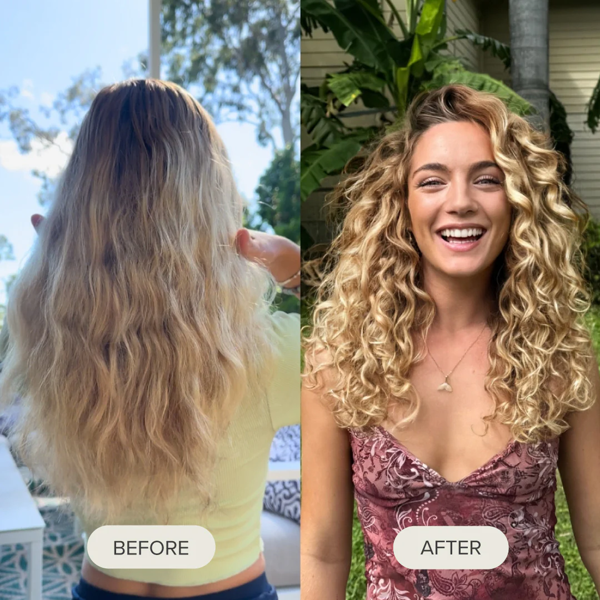
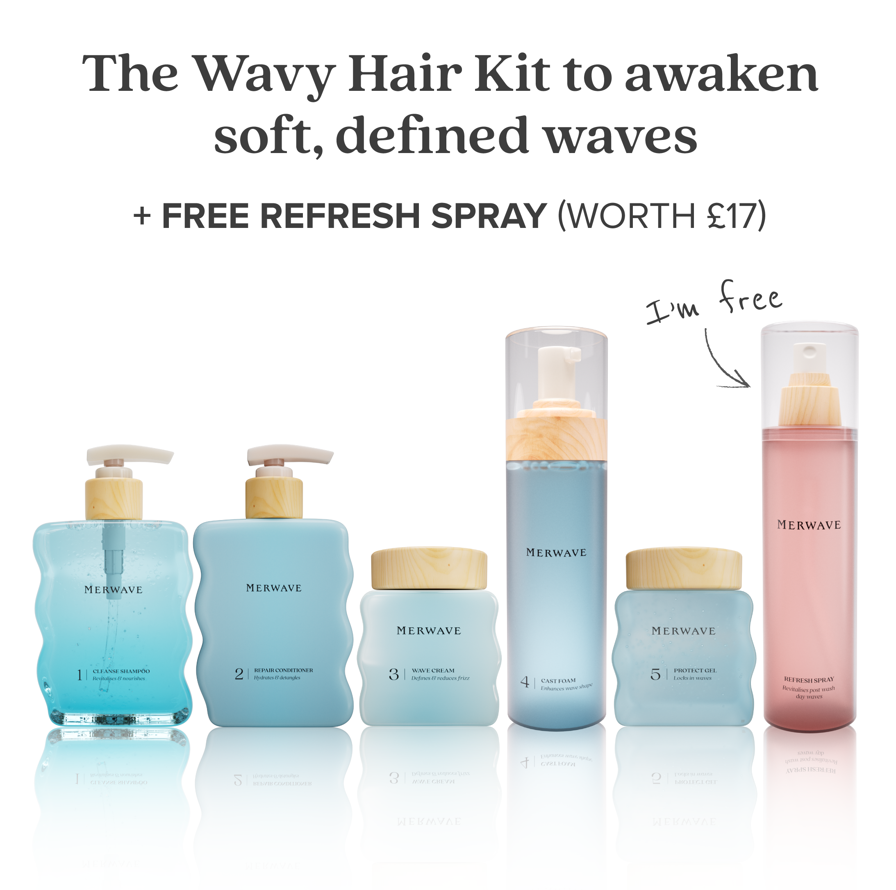

Is your hair actually wavy?
Which of these sounds most like your hair?
"I straightened my hair every day for years — I thought it was just frizzy. Turns out it's wavy, and my straighteners haven't come out since." Dawn H. · Verified customer
What's the most frustrating thing about your hair right now?
When you let your hair dry on its own, does it turn frizzy and puffy instead of smooth?
How often do you reach for your straighteners?
How long have you thought of your hair as just "frizzy" or "hard to manage"?
If your hair finally behaved, what would you want from it?
Pick everything that applies.
You're not bad at managing your hair.
47% of women find out their "straight" hair was wavy all along. Frizz is just what waves do without the right care.
Your results are almost ready.

5,376 women have already taken this analysis · ★4.8
How would you describe the actual strands of your hair?
On a normal day, what do you do to keep the frizz under control?
Analysing how your hair behaves…
Matching your answers against thousands of straight and wavy hair profiles to find your real hair type.
Have you ever tried curly-hair products?
Curly-hair products are built for thick, coily hair that soaks up heavy butters and oils. On finer wavy strands they sit there and do nothing, or weigh the hair down — so it stays flat and frizzy, and you go straight back to the straighteners. That failure is one of the clearest signs your hair is wavy, not curly or straight.
When your hair dries without heat, what does it actually do?
As wavy hair dries, the strands need to clump together to form the wave. Without lightweight products made for that, they dry apart instead — and you get frizz and puff where the wave should be. Straightening flattens it for a day, but the heat damages the strand and the frizz comes back. The wave is there. It's just never been given what it needs to form.
Finalising your hair analysis…
Your hair isn't straight. It's wavy.
Wave expression — currently hidden by frizz
Fine strands, frizz and puff every time it air-dries, years of straightening to keep it manageable, and curly products that did nothing — your hair isn't straight, and it isn't simply frizzy. It's wavy, Type 2.
The frizz you've been fighting is your wave trying to form without the right support. Heat and the wrong products have kept it hidden. The wave has been there the whole time.
Here's your hair once the frizz becomes waves.
From your very first wash, the frizz starts forming into waves instead of puffing up — soft, defined, frizz-free waves you can air-dry, with no straighteners.
The wave is already there. From your very first wash, the frizz starts forming into waves instead of puffing up — and you can air-dry it, no straighteners.
You'll see the change from the very first wash, and it only gets better the more you use it.
Because your hair is wavy, there's exactly one routine built for it.
The Merwave Wavy Hair Starter Kit is made for fine, wavy (Type 2) hair — lightweight formulas that turn frizz into defined waves, so you can finally put the straighteners down. Because you qualify, it's covered by our 90-day money-back guarantee: defined waves, or your money back.

47% of women never realise their hair is wavy. You just did — and that's exactly why this kit is built for you.
Your answers are private. We don't share or store them beyond this session.